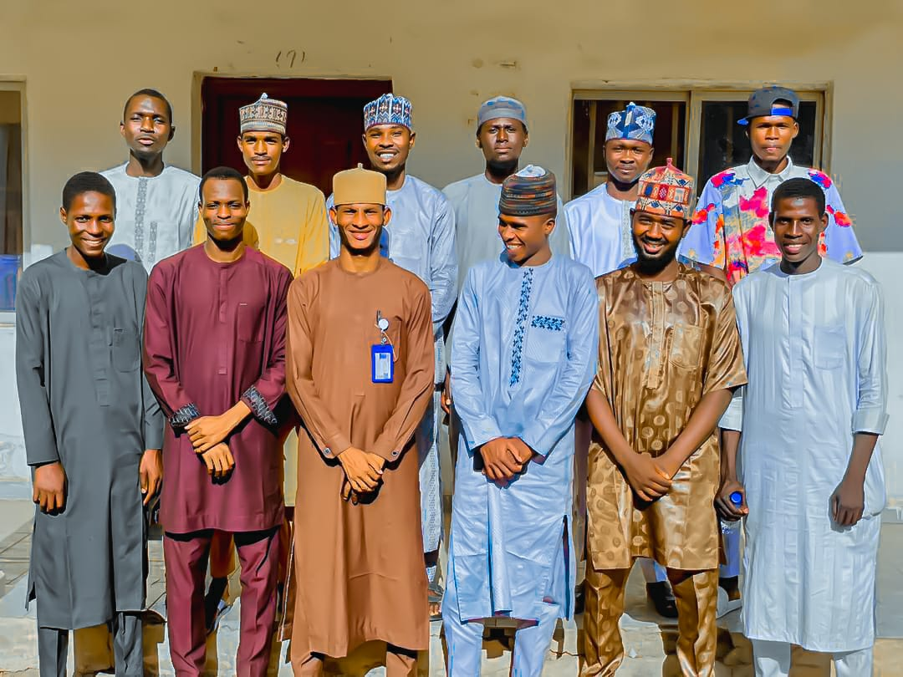

GHISA events are organized as part of the association’s commitment to promoting education, unity, leadership, and community development among students from Gujba Local Government Area who are studying in different higher institutions. These events bring together students, community leaders, educators, and other stakeholders to support young people and encourage academic progress. Through various programs held throughout the year, the association continues to strengthen relationships among members while contributing positively to the development of education within the community. One of the most important programs organized by GHISA is the support and orientation program for students preparing for the Joint Admissions and Matriculation Board (JAMB) examination. Many secondary school students often face challenges in understanding the admission process and preparing effectively for their examinations. GHISA organizes guidance sessions where experienced students from universities and other higher institutions share their knowledge and experiences. During these sessions, students are educated on how to properly register for JAMB, how to choose suitable courses and institutions, and how to prepare academically for the examination. This program also motivates students to aim for higher education and helps them understand the opportunities available to them after completing secondary school. Another key activity carried out by GHISA is the distribution of educational materials to students in secondary schools across Gujba Local Government Area. Members of the association visit schools to provide notebooks and other basic learning materials that support students in their studies. This initiative reflects the association’s commitment to improving access to educational resources and encouraging students to remain focused on their academic goals. The distribution programs are often accompanied by motivational talks where GHISA members encourage younger students to work hard, remain disciplined, and pursue their dreams of higher education. GHISA also organizes mentorship and leadership engagement activities that aim to guide younger students and develop responsible future leaders. During these gatherings, members share their academic journeys and discuss the challenges and opportunities that students may encounter in higher institutions. The sessions provide a platform where students can ask questions, seek advice, and gain confidence about their educational future. These interactions help build stronger connections between current university students and those who aspire to join higher institutions in the future. Community engagement is another important part of GHISA activities. The association participates in programs that promote social development, cooperation, and unity among the people of Gujba Local Government Area. Members often collaborate with schools, community leaders, and other organizations to support initiatives that contribute to the improvement of education and youth development. These activities demonstrate the commitment of GHISA members to giving back to their community and supporting the growth of the next generation. During the holy month of Ramadan, GHISA organizes a special Iftar gathering where members come together to break their fast in a spirit of unity and brotherhood. The Iftar program serves as an opportunity for members to strengthen relationships, reflect on shared values, and promote harmony among students from different institutions. The gathering also provides a moment for discussions about the progress of the association, future projects, and ways in which members can continue to support educational and community development initiatives. The atmosphere of the event encourages cooperation, generosity, and a strong sense of belonging among members. Through these events and activities, GHISA continues to build a strong network of students who are committed to academic excellence, leadership, and service to their community. The association remains dedicated to empowering students, supporting education, and creating opportunities that will help young people achieve their full potential while contributing positively to the development of Gujba Local Government Area and beyond.